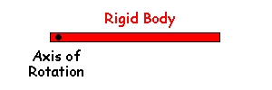
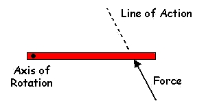
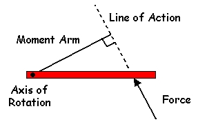

Moment of Force (Torque)
So far, we have only considered forces acting on a particle or a point in space. By definition, a particle has no size and can only translate (not rotate). All objects in biomechanics have size and can translate and rotate so we need to be able to calculate the effectiveness of a force to produce rotation on objects of finite size. These objects will be called "rigid bodies" and the effectiveness of a force to produce rotation will be called either the "moment of force" or "torque".

Assume we have a rigid body that
is free to rotate about an axis.

If a force is applied to that rigid body such that the "Line of Action" of the force does not pass through the axis, there will be a tendency for that force to produce rotation of the rigid body about that axis.

The effectiveness of that force to produce rotation about that axis is called the moment of force or torque. The magnitude of that moment is equal to the product of the force and the "moment arm". The moment arm is the perpendicular distance between the line of action of the force and the axis of rotation. Another name for the moment arm is the "lever arm".